Projects
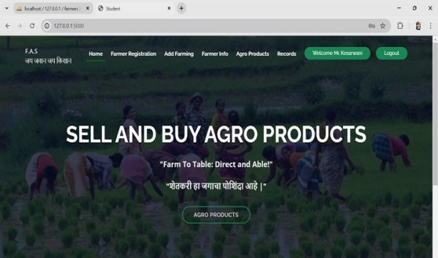
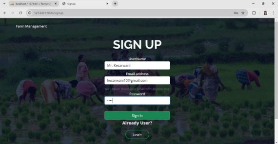
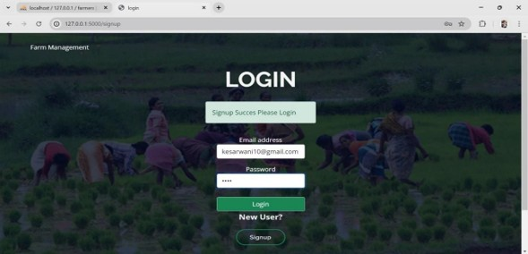
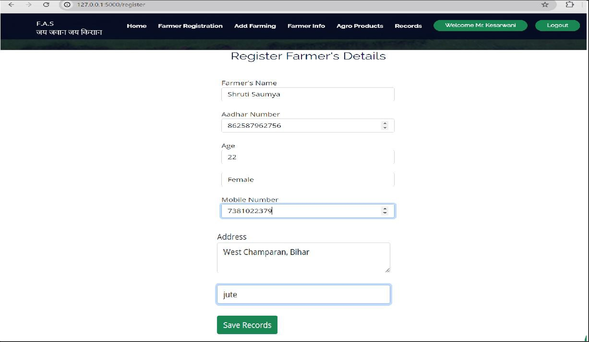
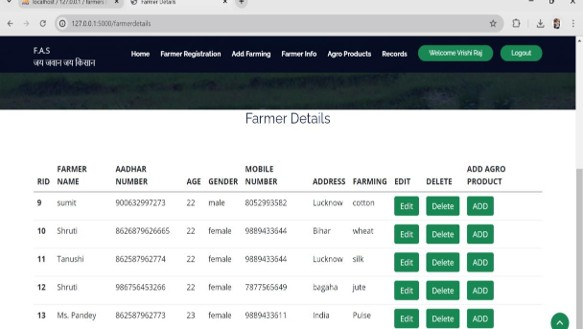
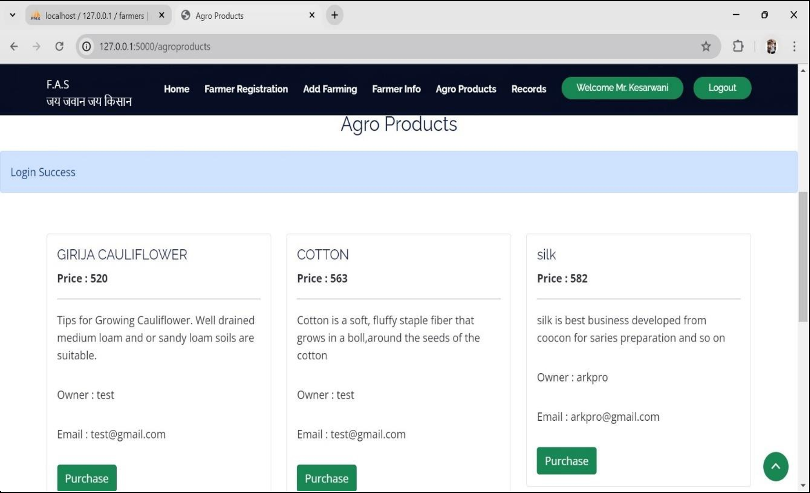
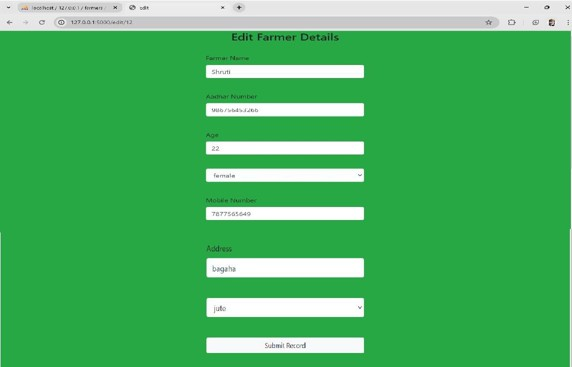
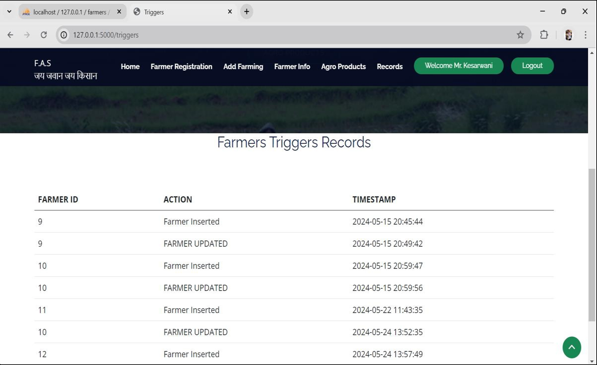
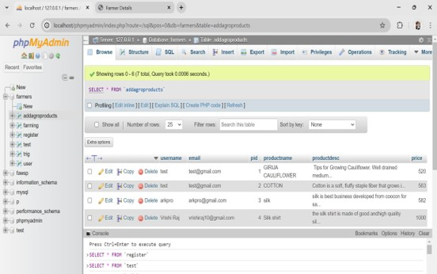
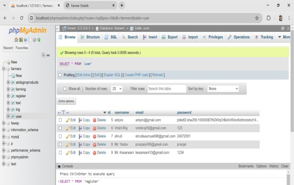
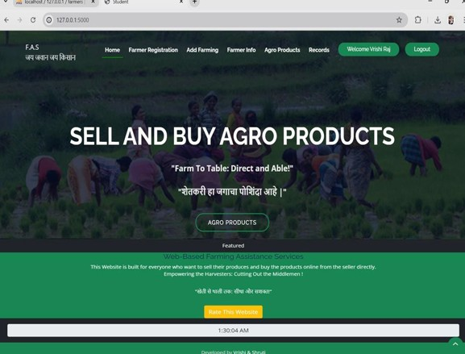
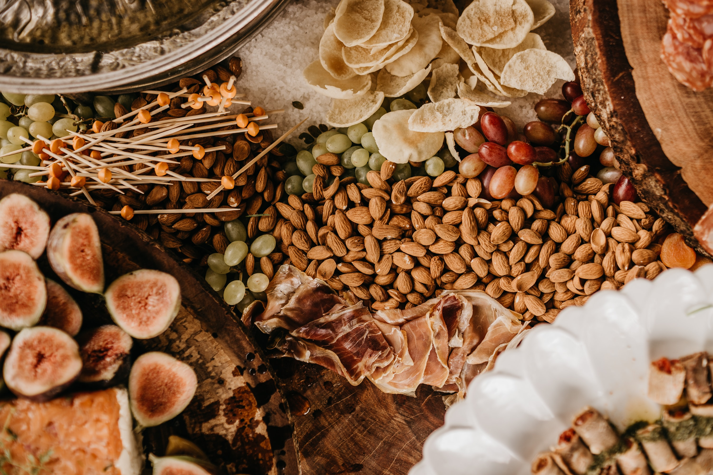
Farming Assistant Web Service
Full-Stack Web Application | HTML, CSS, JavaScript, Python (Flask), MySQL The Farming Assistant Web Service is a web-based platform designed to simplify agricultural management and promote direct communication between farmers, suppliers, and buyers. The application enables farmers to register, manage their farming information, list agricultural products, and connect with potential customers without relying on intermediaries. The platform features a secure authentication system with user registration and login, allowing authenticated users to access personalized dashboards. Farmers can register their details, add and manage farming records, update or delete existing information, and publish agro products for sale. Buyers can browse available products, view pricing and seller details, and directly connect with product owners. The backend is powered by Python (Flask) with MySQL for data storage, supporting complete CRUD operations for farmer records and agro products. Database triggers are implemented to maintain activity logs, ensuring data consistency and improving record tracking. A responsive user interface built with HTML, CSS, and JavaScript provides an intuitive experience across different devices. Key Features Secure user registration and login authentication Farmer registration and profile management Add, edit, update, and delete farming records Agro product marketplace for buying and selling agricultural products Product listings with pricing, owner details, and purchase options MySQL database integration with full CRUD functionality Database trigger implementation for activity logging and record tracking Responsive and user-friendly interface for seamless navigation Technologies Used Frontend: HTML5, CSS3, JavaScript Backend: Python, Flask Database: MySQL Tools: phpMyAdmin, Git, VS Code
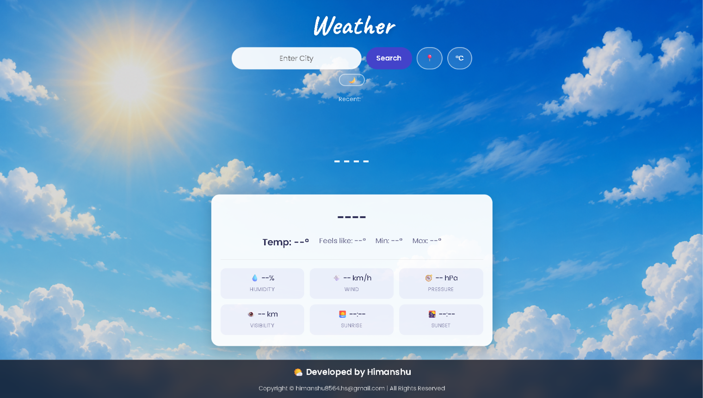
Weather Forecast App
Web Application | HTML, CSS, JavaScript, OpenWeatherMap API The Weather Forecast App is a clean, responsive web application that lets users search for any city and instantly view current weather conditions. It displays temperature, "feels like" value, and daily min/max readings, along with humidity, wind speed, atmospheric pressure, visibility, sunrise, and sunset times, all pulled live from a OpenWeatherMap API. The interface keeps a history of recently searched cities for quick access, and includes a toggle for switching between Celsius and Fahrenheit. A soft, sky-themed background paired with a frosted-glass results card gives the app a polished, weather-appropriate look and feel. Key Features Live city search with current weather data Temperature, feels-like, and min/max display Humidity, wind, pressure, and visibility stats Sunrise and sunset times Recent search history Celsius/Fahrenheit unit toggle Technologies Used Frontend: HTML5, CSS3, JavaScript API: OpenWeatherMap API integration